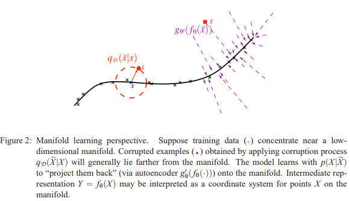
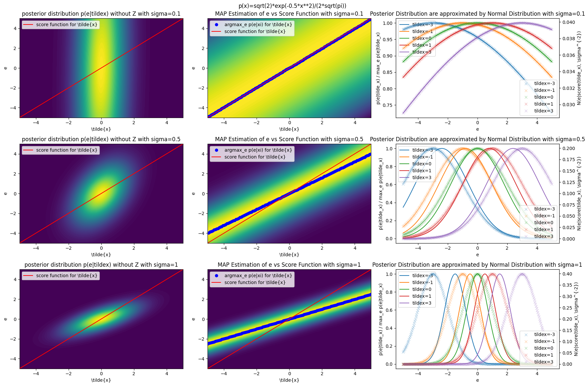
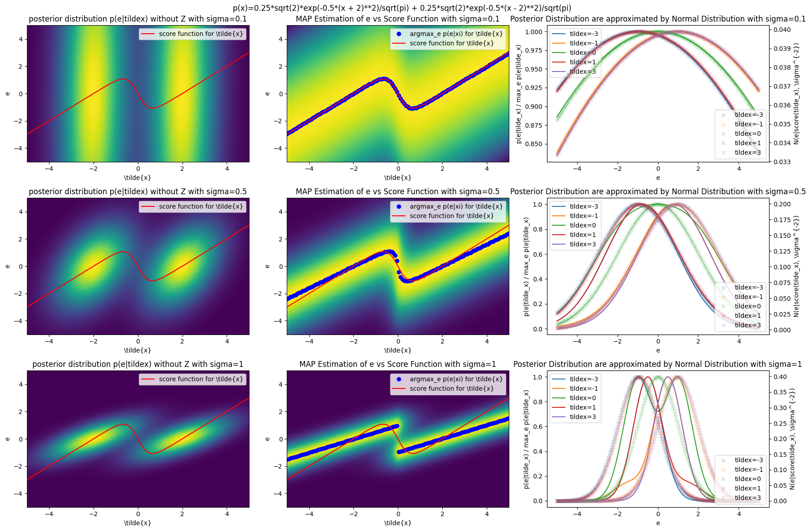
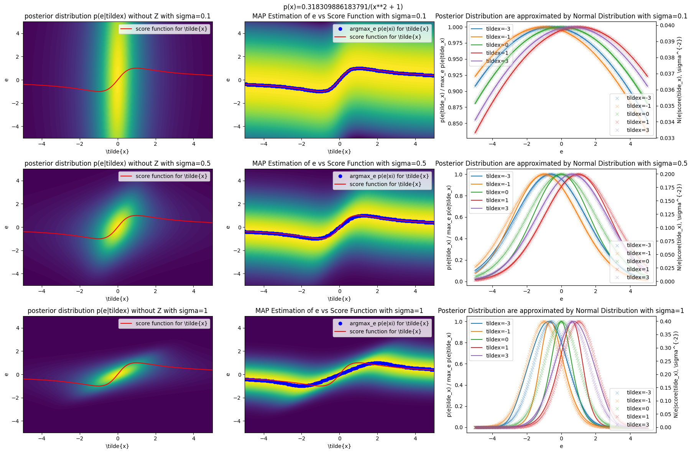
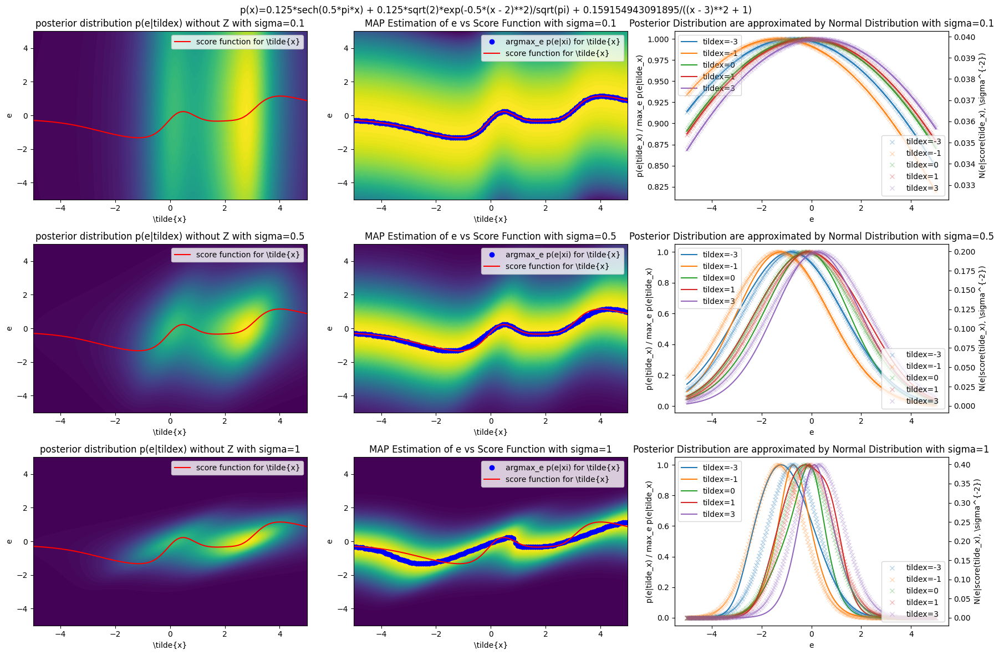
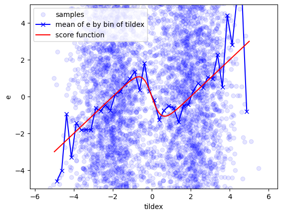
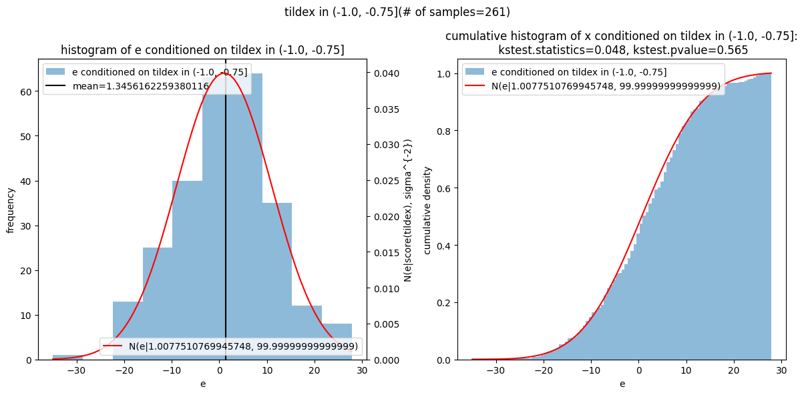
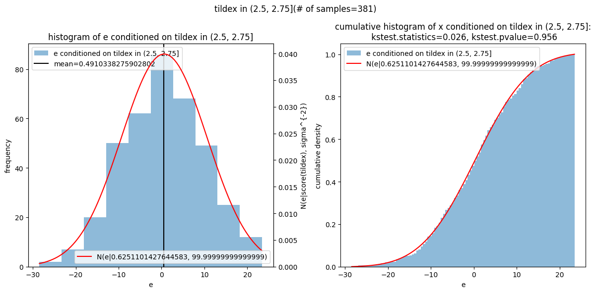

[Denoising Score Matching] Bayesian Interpretation of Why the Noise Prediction Model (Denoising Model) Can Estimate the Score Function
Warning
This article is partially generated by generative AI. Before using the content, please verify it by yourself. If you notice any errors or inappropriate expressions, please let me know. Thank you.
この記事の執筆にあたり一部生成AIを使用しています。 当方でも内容の確認はしておりますが、内容を鵜呑みにせず、ご自身で確認の上ご活用ください。 もし、誤りや不適切な表現などお気づきの点がございましたら、お手数ですがお知らせいただけますと幸いです。
Introduction
It has been a long time since image generation models such as Stable Diffuion and Dall-e were announced. The boom of generative AI is still ongoing.
In this article, we will use Bayesian estimation to interpret why the noise prediction model (denoising model) can estimate the score function to deepen our understanding of denoising score matching, one of the diffusion models.
Stable Diffuion, Dall-e などの画像生成モデルが発表されて久しくなりました。今もまだまだ生成AIのブームは続いています。
本稿では、拡散モデルの一つであるデノイジングスコアマッチングの理解を深めるべく、ノイズ予測モデル（デノイジングモデル）がスコア関数の推定を行うことができる理由について、ベイズ推定を使った解釈を行います。
Target Audience
- People studying diffusion models
- People who have studied diffusion models but are not convinced that noise can be predicted
- 拡散モデルを勉強中の人
- 拡散モデルを勉強したがノイズを予測することに納得がいかない人
What is Denoising Score Matching?
Let us consider the problem of estimating the probability distribution \(p(x)\) of \(x \in \mathbb{R}^d\) from a finite number of observations \(\{x_n\}_{n=1}^N\). "Denoising Score Matching" is one of the methods to solve this problem, which estimates the score function \(s(x):=\nabla_x \log p(x)\) of the probability distribution \(p(x)\), and estimates the probability distribution \(p(x)\).
\(x \in \mathbb{R}^d\) とし、\(x\) が従う確率分布（未知）\(p(x)\) を有限個の観測値 \(\{x_n\}_{n=1}^N\) から推定するという問題を考えましょう。 デノイジングスコアマッチングは、この問題を解くための手法の1つで、確率分布 \(p(x)\) のスコア関数 \(s(x):=\nabla_x \log p(x)\) を推定することで、確率分布 \(p(x)\) を推定する手法です。
Note
It should be noted that even if the score function \(s(x):=\nabla_x \log p(x)\) can be estimated, it is difficult to estimate the probability distribution \(p(x)\) itself.
This is because in order to calculate \(p(x)\) from \(s(x)\), it is necessary to determine the normalization constant, i.e. the partition function \(Z\), by integration, which is generally difficult to calculate.
However, although it is difficult to estimate \(p(x)\) itself, it is possible to sample from \(p(x)\) using the score function \(s(x)\) by using the following Langevin-MonteCarlo method.
where \(\xi \sim \mathcal{N}(0, I_d)\) (\(I_d\) is the \(d\)-dimensional identity matrix).
スコア関数 \(s(x):=\nabla_x \log p(x)\) が推定できたとしても \(p(x)\) 自体を推定することは難しいことには注意が必要です。なぜならば \(s(x)\) から \(p(x)\) を計算するためには、規格化定数（つまり分配関数 \(Z\)）を積分により求める必要があり、一般には計算が困難だからです。
しかしながら、\(p(x)\) 自体の推定は困難ですが、スコア関数 \(s(x)\) を用いて \(p(x)\) からサンプリングすることは下記の Langevin-MonteCarlo法を用いることで可能です。
ただし、\(\xi \sim \mathcal{N}(0, I_d)\) (\(I_d\) は \(d\) 次元の単位行列) です。
In denoising score matching, the score function \(s(x)\) is estimated by minimizing the following objective function with \(s(x)\) replaced by \(s_\theta(x)\).
デノイジングスコアマッチングでは下記の目的関数を最小化することでスコア関数 \(s(x)\) を \(s_\theta(x)\) で推定します。
Interpreting this equation literally, it means that \(s_\theta\) is learned to predict (denoise) the noise \(\varepsilon\) added to the original sample \(x\) from the noisy sample \(x+\varepsilon\). However, this is actually known to be equivalent to minimizing the following objective function (Vincent, 2011)1:
これは式の意味をそのまま解釈すると $s_\theta $ がノイズが付与されたサンプル \(x+\varepsilon\) から元のサンプル \(x\) に加えられたノイズ \(\varepsilon\) を予測する（デノイジング）ように学習することを意味していますが、実は下記を最小化することと等価であることが知られています(Vincent, 2011)1:
where \(p_\sigma(\tilde{x}) = \int p(x) \mathcal{N}(\tilde{x}; x, \sigma^2 I_d) dx\) and \(p_\sigma(\tilde{x})\) is the perturbed distribution of \(p(x)\).
The \(s_\theta(\tilde{x};\sigma)\) learned by this minimization approximates the score function of \(p_\sigma(\tilde{x})\), especially when \(\sigma\) is sufficiently small, it approximates the score function of \(p(x)\).
So far, we have seen denoising score matching, but it is difficult to understand intuitively whether noise prediction and score function estimation are equivalent (at least for me). Okanohara(2023)3 used a figure of Vincent(2010)2 to explain the intuitive meaning of denoising score matching.
Adding noise causes the probability to jump to low probability regions. The average denoising in various directions becomes the perpendicular to the direction of high probability.
ただし、\(p_\sigma(\tilde{x}) = \int p(x) \mathcal{N}(\tilde{x}; x, \sigma^2 I_d) dx\) で \(p_\sigma(\tilde{x})\) は \(p(x)\) を少しぼやかした摂動後分布です。
この最小化により学習される \(s_\theta(\tilde{x};\sigma)\) は \(p_\sigma(\tilde{x})\) のスコア関数を近似、特に \(\sigma\) が十分に小さい場合は \(p(x)\) のスコア関数を近似します。
さて、ここまでデノイジングスコアマッチングについて見てきましたが、ノイズの予測とスコア関数の推定が等価であるのか、直感的には理解しがたいです（少なくとも私には）。岡野原さんは3においてVincent(2010)2の図を用いてデノイジングスコアマッチングの直感的な意味を下記のように説明しています：
ノイズを加えると確率が低い領域へ飛び出す。様々な方向へのデノイジンの平均は確率が高い方向への垂線となる

However, it is still difficult to understand why the noise prediction model becomes the score function.
In the next section, we will consider a simple case and try to intuitively understand why denoising becomes an estimation of the score function.
やはりなぜノイズ予測モデルがスコア関数になるのか狐につままれたような気持ちになります。
そこで次節では簡単なケースを考えて、なぜデノイジングがスコア関数の推定になるのかを直感的に理解していきたいと思います。
Bayesian Interpretation of Why the Noise Prediction Model (Denoising Model) Can Estimate the Score Function
Here, we consider a simple case to intuitively understand why denoising becomes an estimation of the score function.
First, to consider the denoising problem, we consider the following naive one-dimensional case:
さて、ここでは簡単なケースを考えて、なぜデノイジングがスコア関数の推定になるのかを直感的に理解していきます。
まず、デノイジングの問題を考えるために次の素朴な1次元のケースを考えます:
where \(x \in \mathbb{R} \sim p(x)=:f(x)\), \(\varepsilon \sim \mathcal{N}(0, \sigma^2)\), and \(x \perp \varepsilon\).
This represents the process of adding noise to the original sample in denoising score matching. The problem we want to consider here is the denoising problem, where we estimate \(\varepsilon\) given \(\tilde{x}\). We will see that solving this problem leads to estimating the score function of \(p(x)\). Let's scale \(\varepsilon\) by \(e = \varepsilon / \sigma^2\). Then, the above case can be rewritten as follows:
ただし、\(x \in \mathbb{R} \sim p(x)=:f(x)\)、\(\varepsilon \sim \mathcal{N}(0, \sigma^2)\), \(x \perp \varepsilon\)。
これはデノイジングスコアマッチングにおいてオリジナルのサンプルにノイズを付与する過程を表しています。 ここで考えたい問題はデノイジング、\(\tilde{x}\) が与えられた状況で \(\varepsilon\) を推定する問題です。 この問題を解くことが \(p(x)\) のスコア関数を推定することになることを見ていきます。 \(\varepsilon\) を \(e = \varepsilon / \sigma^2\) でスケーリングしておきます。すると、上記のケースは下記のように書き換えられます:
where \(e \sim \mathcal{N}(0, \sigma^{-2})\), and \(x \perp e\).
Now, let's consider the problem of estimating \(e\) given \(\tilde{x}\). Using the Bayes' theorem with \(x \sim p(x)\) and \(\tilde{x} = x + \sigma^2 e\), the posterior distribution of \(e\) is expressed as follows.
ただし、\(e \sim \mathcal{N}(0, \sigma^{-2})\), \(x \perp e\)。
さて、このとき、\(\tilde{x}\) が与えられた状況で \(e\) を推定する問題を考えてみましょう。 \(x \sim p(x)\) および \(\tilde{x} = x + \sigma^2 e\) に注意してベイズの定理を使うと \(e\) の事後分布は次のように表されます。
Now, let's use this posterior distribution to perform MAP estimation of \(e\). The MAP estimation of \(e\) can be calculated as follows.
さて、この事後分布を使って MAP 推定してみましょう。 \(e\) のMAP推定は次のように計算できます。
Then, from the first-order condition of \(\hat{e}\)'s optimality, the following equation holds.
そして、\(\hat{e}\) の最適性の1次の条件より、 次の式が成り立ちます
Therefore, \(\hat{e}\) is expressed as follows.
したがって、\(\hat{e}\) は次のように表されます。
where \(s(x)\) is the score function of \(p(x)=f(x)\).
Thus, it is understood that the MAP estimation of \(e\) in denoising is expressed using the score function. However, the above is MAP estimation. On the other hand, denoising score matching uses the least squares method. There is still a gap from this perspective.
Next, let's consider how the posterior distribution \(p(e|\tilde{x})\) in the case where \(\sigma\) is sufficiently small can be approximated. Note that \(e = \mathcal{O}(\sigma^{-1})\) because \(e \sim \mathcal{N}(0, \sigma^{-2})\). By performing a Taylor expansion for \(\log p(e|\tilde{x}) = \log f(\tilde{x} - \sigma^2 e) - \frac{1}{2}\sigma^2e^2 + {\rm const.}\), and approximating it as a quadratic function of \(e\) while ignoring \(\mathcal{O}(\sigma^3)\) (\(\sigma^6 e^3\), etc.), we obtain the following result.
ただし、\(s(x)\) は \(p(x)=f(x)\) のスコア関数です。
さて、以上からデノイジングの \(e\) の MAP 推定がスコア関数を用いて表現されることがわかりました。 ただ、上記は MAP 推定であり、デノイジングスコアマッチングにおいては最小二乗法。この観点でまだギャップがあります。
ここで \(\sigma\) が十分に小さい場合の上記の事後分布 \(p(e|\tilde{x})\) がどのように近似できるか考えてみましょう。 \(e \sim \mathcal{N}(0, \sigma^{-2})\) より \(e = \mathcal{O}(\sigma^{-1})\) にも気を付けながら、\(\log p(e|\tilde{x}) = \log f(\tilde{x} - \sigma^2 e) - \frac{1}{2}\sigma^2e^2 + {\rm const.}\) に対してテイラー展開を行い、\(\mathcal{O}(\sigma^3)\) (\(\sigma^6 e^3\) など) を無視しつつ、\(e\) の二次関数として近似してみると、下記の結果が得られます。
Warning
The detailed derivation is as follows, but no certainty that it is correct.
詳細な導出は以下ですが、正しいかどうかは不確かです。
In other words, it can be confirmed that the posterior distribution $p(e|\tilde{x}) in the case where \(\sigma\) is sufficiently small can be approximated by a Gaussian distribution with the score function as the mean. As a result, it can be naturally interpreted that in denoising score matching, the score function can be estimated by estimating the noise using a least squares method. Furthermore, it can be understood that the weight for performing denoising score matching for various \(\sigma\) simultaneously is $\sigma^2, based on the fact that the variance of the Gaussian distribution is \(\sigma^{-2}\). This is consistent with the selection of weights based on empirical results in (Y. Song and S. Ermon, 2019)4.
Thus, it has been intuitively understood that estimating noise in denoising score matching becomes an estimation of the score function from the perspective of maximizing the posterior distribution \(p(e|\tilde{x})\).
In particular, when \(\sigma\) is sufficiently small, it has been obtained that the least squares method in denoising score matching becomes a least squares method with the noise intensity \(\sigma^2\) as the weight, based on the fact that the posterior distribution \(p(e|\tilde{x})\) can be approximated by a Gaussian distribution with the score function as the mean and \(\sigma^{-2}\) as the variance.
つまり、\(\sigma\) が十分に小さい場合の上記の事後分布 \(p(e|\tilde{x})\) がスコア関数を平均とするガウス分布で近似できることが確認できます。 この結果、デノイジングスコアマッチングにおいては最小二乗法的なアプローチにより、ノイズを推定することでスコア関数を推定することができることが自然と解釈することができます また、ガウス分布の分散が \(\sigma^{-2}\) であることから、様々な \(\sigma\) に対するデノイジングスコアマッチングを同時に行う際の重みが \(\sigma^2\) であることもわかります。これは Y. Song and S. Ermon(2019) の経験的な結果に基づく重みの選択とも合致しています。
以上により、デノイジングスコアマッチングでノイズを推定することが、事後分布 \(p(e|\tilde{x})\) の最大化の観点でスコア関数の推定になることが直感的に理解できました。
特に \(\sigma\) が十分に小さい場合には、事後分布 \(p(e|\tilde{x})\) がスコア関数を平均、\(\sigma^{-2}\)を分散とするガウス分布で近似できることから、デノイジングスコアマッチングにおける最小二乗法的なアプローチが、ノイズ強度\(\sigma^2\)を重みとした最小二乗法となるという描像が得られました。
Numerical Verification of the Interpretation
In this section, we will numerically examine that the posterior distribution of noise seen above can be approximated by a Gaussian distribution with the negative of the score function as the mean.
本節では上記で見たノイズの事後分布がスコア関数の負を平均値とするガウス分布で近似できることを数値的に見ていきます。
Warning
The code provided in this article is intended to demonstrate the operation in a specific environment and under specific conditions, and may not work the same in all environments or cases. Also, software updates and compatibility issues may occur over time, so the code provided may not be up to date. Use of this code is at the reader's own risk. Before executing, make sure you understand the code well and adapt it to your environment as needed. Also, don't forget to back up as much as possible. If you have any questions or suggestions for improvement regarding the content or code of this article, please let us know in the comments or on social media.
本記事で提供されているコードは、特定の環境や条件下での動作を示すものであり、全ての環境やケースで同様に機能するとは限りません。また、時間の経過とともにソフトウェアの更新や互換性の問題が生じる可能性があるため、掲載されているコードが最新の状態であるとは限りません。本コードの使用は、読者の責任において行ってください。実行する前に、コードをよく理解し、必要に応じて環境に適合させることを推奨します。また、可能な限りバックアップを取ることを忘れないでください。本記事の内容やコードに関する質問や改善提案があれば、コメント欄やソーシャルメディアを通じてお知らせください。
!python -V
# %pip intall numpy==2.1.3 sympy==1.13.3 matplotlib==3.9.2 pandas==2.2.3 scipy==1.14.1
Python 3.11.5
import matplotlib.pyplot as plt
import numpy as np
import pandas as pd
from scipy.stats import kstest, norm
import sympy
# fix seed
np.random.seed(42)
# symbols for sympy
x = sympy.symbols('x')
e = sympy.symbols('e')
tildex = sympy.symbols('tildex') # tildex = x + e
sigma = sympy.symbols('sigma')
Numerical verification using analytically calculated posterior distribution
First, let's analytically calculate \(p(e|\tilde{x})\) without generating data, and see that the score function can be approximated by MAP estimation of \(e\) when \(\sigma\) is sufficiently small, and that \(p(e|\tilde{x})\) can be approximated by \(\mathcal{N}(e|-s(\tilde{x}), \sigma^{-2})\), where \(s(x):=\nabla_x \log p(x)\).
まずはデータを生成せずに \(p(e|\tilde{x})\) を解析的に計算して、\(\sigma\) が十分に小さい時に MAP 推定でスコア関数を近似できること、および、\(p(e|\tilde{x})\) が \(\mathcal{N}(e|-s(\tilde{x}), \sigma^{-2})\) で近似できることを見ていきましょう（ただし、\(s(x):=\nabla_x \log p(x)\)）。
The method of numerical verification by visualizing the posterior distribution $p(e|\tilde{x})$
def plot_numerical_verification(
sympy_p_x,
sympy_p_e_posterior,
sympy_negative_score_function,
sigma_val: float = 0.1,
tildex_vals: np.ndarray = np.linspace(-5, 5, 128),
e_vals: np.ndarray = np.linspace(-5, 5, 256),
axs=None,
fig=None,
fewer_e_vals: np.ndarray = np.linspace(-3, 3, 7),
):
tildex_mesh, e_mesh = np.meshgrid(tildex_vals, e_vals)
p_e_posterior_vals = sympy.lambdify((tildex, e, sigma), sympy_p_e_posterior, 'numpy')(tildex_mesh, e_mesh, sigma_val)
if axs is None:
fig, axs = plt.subplots(3, 1, figsize=(12, 16))
fig.suptitle(f'p(x)={sympy_p_x}')
ax = axs[0]
ax.set_title(f'posterior distribution p(e|tildex) without Z with sigma={sigma_val}')
ax.contourf(tildex_mesh, e_mesh, p_e_posterior_vals, levels=100, label='p(e|tildex) without Z')
ax.plot(tildex_vals, sympy.lambdify(x, sympy_negative_score_function)(tildex_vals), 'r', label="score function for \\tilde{x}")
ax.set_xlabel('\\tilde{x}')
ax.set_ylabel('e')
ax.set_xlim(tildex_vals.min(), tildex_vals.max())
ax.set_ylim(e_vals.min(), e_vals.max())
ax.legend()
ax = axs[1]
ax.set_title(f'MAP Estimation of e vs Score Function with sigma={sigma_val}')
ax.contourf(tildex_mesh, e_mesh, p_e_posterior_vals/p_e_posterior_vals.max(axis=0), levels=100, label='p(e|\\tilde{x})/max_e p(e|\\tilde{x})')
ax.plot(tildex_vals, e_vals[np.argmax(p_e_posterior_vals, axis=0)], 'bo', label='argmax_e p(e|xi) for \\tilde{x}')
ax.plot(tildex_vals, sympy.lambdify(x, sympy_negative_score_function)(tildex_vals), 'r', label="score function for \\tilde{x}")
ax.set_xlabel('\\tilde{x}')
ax.set_ylabel('e')
ax.set_xlim(tildex_vals.min(), tildex_vals.max())
ax.set_ylim(e_vals.min(), e_vals.max())
ax.legend()
ax = axs[2]
ax.set_title(f'Posterior Distribution are approximated by Normal Distribution with sigma={sigma_val}')
axd = ax.twinx()
for i, _tildex_val in enumerate(fewer_e_vals):
# plot p(e|tildex)
_p = sympy.lambdify((e, tildex, sigma), sympy_p_e_posterior)(e_vals, _tildex_val, sigma_val)
ax.plot(e_vals, _p/_p.max(), label=f'tildex={_tildex_val}', ls='-', marker='')
# plot N(e|score(tildex), \sigma^{-2})
axd.plot(e_vals, norm.pdf(e_vals, loc=sympy.lambdify(x, sympy_negative_score_function)(_tildex_val), scale=1/sigma_val), ls='', marker='x', label=f'tildex={_tildex_val}', alpha=0.3)
ax.set_xlabel('e')
ax.set_ylabel('p(e|tilde_x) / max_e p(e|tilde_x)')
axd.set_ylabel('N(e|score(tilde_x), \\sigma^{-2})')
ax.legend(ncol=1, loc='upper left')
axd.legend(ncol=1, loc='lower right')
Case 1: The standard normal distribution
First, let's consider the case where \(p(x)\) is the standard normal distribution, i.e., \(p(x) = \mathcal{N}(x|0, 1)\).
まずは \(p(x)\) が標準正規分布、すなわち \(p(x) = \mathcal{N}(x|0, 1)\) の場合を考えます。
# define pdf of x
f = sympy.exp(-0.5*x**2) / sympy.sqrt(2 * sympy.pi) # normal distribution
f
\(\displaystyle \frac{\sqrt{2} e^{- 0.5 x^{2}}}{2 \sqrt{\pi}}\)
In the following code, we plot the posterior distribution \(p(e|\tilde{x})\) (left), MAP estimation (center), and the posterior distribution \(p(e|\tilde{x})\) and \(\mathcal{N}(e|-s(\tilde{x}), \sigma^{-2})\) (right) for $\sigma = $ 0.1 (top), 0.5 (middle), and 1 (bottom). As a result, we can see that as \(\sigma\) becomes sufficiently small, the MAP estimation of \(e\), i.e., \(\arg\max _e p(e|\tilde{x})\), approaches the score function \(s(\tilde{x})\) (center). Also, we can see that as \(\sigma\) becomes sufficiently small, the posterior distribution \(p(e|\tilde{x})\) approaches \(\mathcal{N}(e|-s(\tilde{x}), \sigma^{-2})\) (right).
下記のコードでは $\sigma = $ 0.1（上段）, 0.5（中断）, 1（下段） に対して、事後分布 \(p(e|\tilde{x})\)（左）、MAP 推定（中央）、および、事後分布 \(p(e|\tilde{x})\) と \(\mathcal{N}(e|-s(\tilde{x}), \sigma^{-2})\)（右）をプロットしています。 この結果、\(\sigma\) が十分に小さくなるにつれて \(e\) の MAP 推定、つまり \(\arg\max _e p(e|\tilde{x})\) がスコア関数 \(s(\tilde{x})\) に近づいていく様子を確認することができます（中央）。 また、\(\sigma\) が十分に小さくなるにつれて、事後分布 \(p(e|\tilde{x})\) が \(\mathcal{N}(e|-s(\tilde{x}), \sigma^{-2})\) に近づいていく様子を確認することができます（右）。
# set the true distribution p(x) = f(x)
p_x = f
# define pdf of e: p(e) = N(e|0, sigma^{-2})
p_e = sympy.exp(-0.5 * e**2 * sigma**2) * sigma / sympy.sqrt(2 * sympy.pi)
# calculate the posterior distribution: p(e|\tilde{x}) \propto p(e) p(\tilde{x}|e)
p_e_posterior = p_e * p_x.subs(x, tildex - sigma*sigma*e)
# calculate the negative score function
logf = sympy.log(f)
dlogf = sympy.diff(logf, x) # score function
dU = -dlogf # negative score function. Note: U is the energy function
# plot the numerical verification
fig, axs = plt.subplots(3, 3, figsize=(18, 12))
for axs_, sigma_val in zip(axs, [0.1, 0.5, 1]):
plot_numerical_verification(
p_x,
p_e_posterior,
dU,
sigma_val = sigma_val,
tildex_vals = np.linspace(-5, 5, 128),
e_vals = np.linspace(-5, 5, 256),
axs=axs_,
fig=fig,
fewer_e_vals = [-3, -1, 0, 1, 3],
)
plt.tight_layout()
plt.show()
/tmp/ipykernel_2728231/3909665571.py:22: UserWarning: The following kwargs were not used by contour: 'label'
ax.contourf(tildex_mesh, e_mesh, p_e_posterior_vals, levels=100, label='p(e|tildex) without Z')
/tmp/ipykernel_2728231/3909665571.py:32: UserWarning: The following kwargs were not used by contour: 'label'
ax.contourf(tildex_mesh, e_mesh, p_e_posterior_vals/p_e_posterior_vals.max(axis=0), levels=100, label='p(e|\\tilde{x})/max_e p(e|\\tilde{x})')

Case 2: A mixture of two normal distributions
Second, let's consider the case where \(p(x)\) is the mixture of two normal distributions, i.e., \(p(x) = 0.5\mathcal{N}(x|0, 1) + 0.5\mathcal{N}(x|5, 1)\) to see whether the above results hold in a more complex distribution.
次に、\(p(x)\) が2つの正規分布の混合、すなわち \(p(x) = 0.5\mathcal{N}(x|0, 1) + 0.5\mathcal{N}(x|5, 1)\) の場合を考え、より複雑な分布でも上記の結果が成り立つかどうかを見ていきます。
# define pdf of x
# 2 modal gaussian distribution
f = 0.5 * sympy.exp(-0.5*(x-2)**2) / sympy.sqrt(2 * sympy.pi) + 0.5 * sympy.exp(-0.5*(x+2)**2) / sympy.sqrt(2 * sympy.pi)
f
\(\displaystyle \frac{0.25 \sqrt{2} e^{- 0.5 \left(x + 2\right)^{2}}}{\sqrt{\pi}} + \frac{0.25 \sqrt{2} e^{- 0.5 \left(x - 2\right)^{2}}}{\sqrt{\pi}}\)
p_x = f
# define pdf of e: p(e) = N(e|0, sigma^{-2})
p_e = sympy.exp(-0.5 * e**2 * sigma**2) * sigma / sympy.sqrt(2 * sympy.pi)
# calculate the posterior distribution: p(e|\tilde{x}) \propto p(e) p(\tilde{x}|e)
p_e_posterior = p_e * p_x.subs(x, tildex - sigma*sigma*e)
# calculate the negative score function
logf = sympy.log(f)
dlogf = sympy.diff(logf, x) # score function
dU = -dlogf # negative score function. Note: U is the energy function
# plot the numerical verification
fig, axs = plt.subplots(3, 3, figsize=(18, 12))
for axs_, sigma_val in zip(axs, [0.1, 0.5, 1]):
plot_numerical_verification(
p_x,
p_e_posterior,
dU,
sigma_val = sigma_val,
tildex_vals = np.linspace(-5, 5, 128),
e_vals = np.linspace(-5, 5, 256),
axs=axs_,
fig=fig,
fewer_e_vals = [-3, -1, 0, 1, 3],
)
plt.tight_layout()
plt.show()
/tmp/ipykernel_2728231/3909665571.py:22: UserWarning: The following kwargs were not used by contour: 'label'
ax.contourf(tildex_mesh, e_mesh, p_e_posterior_vals, levels=100, label='p(e|tildex) without Z')
/tmp/ipykernel_2728231/3909665571.py:32: UserWarning: The following kwargs were not used by contour: 'label'
ax.contourf(tildex_mesh, e_mesh, p_e_posterior_vals/p_e_posterior_vals.max(axis=0), levels=100, label='p(e|\\tilde{x})/max_e p(e|\\tilde{x})')

Case 3: The standard Cauchy distribution
Third, let's consider the case where \(p(x)\) is the Cauchy distribution, i.e., \(p(x) = \frac{1}{\pi(1+x^2)}\) to see whether the above results hold in a distribution with heavy tails.
3つ目の例として、\(p(x)\) がコーシー分布、すなわち \(p(x) = \frac{1}{\pi(1+x^2)}\) の場合を考え、裾の重い分布でも上記の結果が成り立つかどうかを見ていきます。
# define pdf of x
# cauchy distribution
f = 1 / (1 + x**2) / np.pi
f
\(\displaystyle \frac{0.318309886183791}{x^{2} + 1}\)
p_x = f
# define pdf of e: p(e) = N(e|0, sigma^{-2})
p_e = sympy.exp(-0.5 * e**2 * sigma**2) * sigma / sympy.sqrt(2 * sympy.pi)
# calculate the posterior distribution: p(e|\tilde{x}) \propto p(e) p(\tilde{x}|e)
p_e_posterior = p_e * p_x.subs(x, tildex - sigma*sigma*e)
# calculate the negative score function
logf = sympy.log(f)
dlogf = sympy.diff(logf, x) # score function
dU = -dlogf # negative score function. Note: U is the energy function
# plot the numerical verification
fig, axs = plt.subplots(3, 3, figsize=(18, 12))
for axs_, sigma_val in zip(axs, [0.1, 0.5, 1]):
plot_numerical_verification(
p_x,
p_e_posterior,
dU,
sigma_val = sigma_val,
tildex_vals = np.linspace(-5, 5, 128),
e_vals = np.linspace(-5, 5, 256),
axs=axs_,
fig=fig,
fewer_e_vals = [-3, -1, 0, 1, 3],
)
plt.tight_layout()
plt.show()
/tmp/ipykernel_2728231/3909665571.py:22: UserWarning: The following kwargs were not used by contour: 'label'
ax.contourf(tildex_mesh, e_mesh, p_e_posterior_vals, levels=100, label='p(e|tildex) without Z')
/tmp/ipykernel_2728231/3909665571.py:32: UserWarning: The following kwargs were not used by contour: 'label'
ax.contourf(tildex_mesh, e_mesh, p_e_posterior_vals/p_e_posterior_vals.max(axis=0), levels=100, label='p(e|\\tilde{x})/max_e p(e|\\tilde{x})')

Case 4: A mixture of various distributions
Finally, let's consider a more complex case where \(p(x)\) is the mixture of various distributions, a Cauchy distribution, a normal distribution and a hyperbolic secant distribution, i.e., \(p(x) = 0.3\frac{1}{\pi(1+x^2)} + 0.3\mathcal{N}(x|0, 1) + 0.4\frac{sech(0.5\pi x)}{2}\).
最後に、\(p(x)\) が様々な分布の混合、コーシー分布、正規分布、双曲線関数の逆余接関数分布、すなわち \(p(x) = 0.3\frac{1}{\pi(1+x^2)} + 0.3\mathcal{N}(x|0, 1) + 0.4\frac{sech(0.5\pi x)}{2}\) の場合を考え、より複雑な分布でも上記の結果が成り立つかどうかを見ていきます。
# mixed of cauchy distribution, normal distribution and hyperbolic secant distribution
f = 0.5 * 1 / (1 + (x-3)**2) / np.pi + 0.25 * sympy.exp(-0.5*(x-2)**2) / sympy.sqrt(2 * sympy.pi) + 0.25 * sympy.sech(0.5*x*sympy.pi) / 2
f
\(\displaystyle 0.125 \operatorname{sech}{\left(0.5 \pi x \right)} + \frac{0.125 \sqrt{2} e^{- 0.5 \left(x - 2\right)^{2}}}{\sqrt{\pi}} + \frac{0.159154943091895}{\left(x - 3\right)^{2} + 1}\)
# define pdf of x
p_x = f
# define pdf of e: p(e) = N(e|0, sigma^{-2})
p_e = sympy.exp(-0.5 * e**2 * sigma**2) * sigma / sympy.sqrt(2 * sympy.pi)
# calculate the posterior distribution: p(e|\tilde{x}) \propto p(e) p(\tilde{x}|e)
p_e_posterior = p_e * p_x.subs(x, tildex - sigma*sigma*e)
# calculate the negative score function
logf = sympy.log(f)
dlogf = sympy.diff(logf, x) # score function
dU = -dlogf # negative score function. Note: U is the energy function
# plot the numerical verification
fig, axs = plt.subplots(3, 3, figsize=(18, 12))
for axs_, sigma_val in zip(axs, [0.1, 0.5, 1]):
plot_numerical_verification(
p_x,
p_e_posterior,
dU,
sigma_val = sigma_val,
tildex_vals = np.linspace(-5, 5, 128),
e_vals = np.linspace(-5, 5, 256),
axs=axs_,
fig=fig,
fewer_e_vals = [-3, -1, 0, 1, 3],
)
plt.tight_layout()
plt.show()
/tmp/ipykernel_2728231/3909665571.py:22: UserWarning: The following kwargs were not used by contour: 'label'
ax.contourf(tildex_mesh, e_mesh, p_e_posterior_vals, levels=100, label='p(e|tildex) without Z')
/tmp/ipykernel_2728231/3909665571.py:32: UserWarning: The following kwargs were not used by contour: 'label'
ax.contourf(tildex_mesh, e_mesh, p_e_posterior_vals/p_e_posterior_vals.max(axis=0), levels=100, label='p(e|\\tilde{x})/max_e p(e|\\tilde{x})')

Numerical verification using generated data
In the previous section, we used analytically calculated posterior distributions to confirm that MAP estimation of \(e\) when \(\sigma\) is sufficiently small approximates the score function, and that the posterior distribution can be approximated by a Gaussian distribution with the score function as the mean and \(\sigma^{-2}\) as the variance.
In this section, we will use generated data to numerically verify that estimating noise in denoising score matching becomes an estimation of the score function.
For simplicity, we will avoid complex distributions such as Case 4 in the previous section and verify using the mixture of normal distributions \(p(x) = 0.5\mathcal{N}(x|-2, 1) + 0.5\mathcal{N}(x|2, 1)\).
前節では解析的に計算した事後分布を用いて、\(\sigma\) が十分に小さい場合の \(e\) の MAP 推定がスコア関数を近似すること、そして事後分布がスコア関数を平均、\(\sigma^{-2}\) を分散とするガウス分布で近似できることを確認しました。
本節では生成したデータを用いて、デノイジングスコアマッチングにおいてノイズを推定することがスコア関数の推定になることを数値的に確認します。
簡単のため、前節の Case 4 のような複雑な分布は避けて、混合正規分布 \(p(x) = 0.5\mathcal{N}(x|-2, 1) + 0.5\mathcal{N}(x|2, 1)\) を用いて検証します。
x = sympy.symbols('x')
f = 0.5 * sympy.exp(-0.5*(x-2)**2) / sympy.sqrt(2 * sympy.pi) + 0.5 * sympy.exp(-0.5*(x+2)**2) / sympy.sqrt(2 * sympy.pi)
logf = sympy.log(f)
dlogf = sympy.diff(logf, x) # score function
f
\(\displaystyle \frac{0.25 \sqrt{2} e^{- 0.5 \left(x + 2\right)^{2}}}{\sqrt{\pi}} + \frac{0.25 \sqrt{2} e^{- 0.5 \left(x - 2\right)^{2}}}{\sqrt{\pi}}\)
# generate samples
xs = np.random.randn(10000) + 2 * ((np.random.rand(10000) < 0.5) * 2 - 1)
sigma = 0.1
es = np.random.randn(10000) / sigma
tildexs = xs + sigma * sigma * es
The following results are obtained using the generated \(\{(x_n, e_n, \tilde{x}_n)\}_{n=1}^{10000}\):
- Scatter plot of \(\{(\tilde{x}_n, e_n)\}_{n=1}^{10000}\) (blue points)
- Average value of \(e\) in each bin by binning \(\tilde{x}\) (blue line)
- Plot of the true score function \(s(\tilde{x})\) (red line)
From this result, it can be numerically confirmed that estimating noise in denoising score matching becomes an estimation of the score function.
Note that it is equivalent to confirming that denoising score matching works, although it is a very rough confirmation.
下記の結果は生成した \(\{(x_n, e_n, \tilde{x}_n)\}_{n=1}^{10000}\) を用いて、
- \(\{(\tilde{x}_n, e_n)\}_{n=1}^{10000}\) の散布図（青点）
- \(\tilde{x}\) をビニングして、各ビンにおける \(e\) の平均値（青線）
- 真のスコア関数 \(s(\tilde{x})\) をプロット（赤線）
を一つのグラフに描画したものです。
この結果から、デノイジングスコアマッチングにおいてノイズを推定することがスコア関数の推定になることを数値的に確認することができます。
かなり粗い確認ではありますが、デノイジングスコアマッチングがワークすることの確認に相当します。
df = pd.DataFrame({
'x': xs,
'e': es,
'tildex': tildexs,
})
df['tildex_bin'] = pd.cut(df['tildex'], bins=np.linspace(-5, 5, 41))
dfg = df.groupby('tildex_bin').e.mean().reset_index().assign(tildex_bin=lambda x: x['tildex_bin'].apply(lambda y: y.mid))
plt.scatter(df['tildex'], df['e'], c='b', alpha=0.1, label='samples')
plt.plot(dfg['tildex_bin'], dfg['e'], 'bx-', label='mean of e by bin of tildex')
plt.plot(np.linspace(-5, 5, 100), -sympy.lambdify(x, dlogf)(np.linspace(-5, 5, 100)), 'r', label='score function')
plt.ylim(-5, 5)
plt.xlabel('tildex')
plt.ylabel('e')
plt.legend()
plt.show()
/tmp/ipykernel_2728231/854101565.py:7: FutureWarning: The default of observed=False is deprecated and will be changed to True in a future version of pandas. Pass observed=False to retain current behavior or observed=True to adopt the future default and silence this warning.
dfg = df.groupby('tildex_bin').e.mean().reset_index().assign(tildex_bin=lambda x: x['tildex_bin'].apply(lambda y: y.mid))

The following results show the histogram of \(e\) of the data contained in the bins of \(\tilde{x}\) with a certain number of observations (density: left, cumulative density: right) plotted in blue bins. These correspond to the density function and cumulative density function of \(p(e|\tilde{x})\). In particular, \(\mathcal{N}(e|-s(\tilde{x}), \sigma^{-2})\) is plotted in red as a reference.
From the following results, it can be confirmed that \(p(e|\tilde{x})\) can be approximated by \(\mathcal{N}(e|-s(\tilde{x}), \sigma^{-2})\).
Incidentally, it can also be confirmed that the difference between the cumulative density functions of \(p(e|\tilde{x})\) and \(\mathcal{N}(e|-s(\tilde{x}), \sigma^{-2})\) is not significant by the Kolmogorov-Smirnov test.
以下、観測数がある程度多い \(\tilde{x}\) のビンに含まれるデータの \(e\) のヒストグラム（密度：左、累積密度：右）を青いビンでプロットした結果である。 これらは \(p(e|\tilde{x})\) に相当する密度関数および累積密度関数である。 特に比較対象として \(\mathcal{N}(e|-s(\tilde{x}), \sigma^{-2})\) を赤い線でプロットしている。
下記の結果、\(p(e|\tilde{x})\) が \(\mathcal{N}(e|-s(\tilde{x}), \sigma^{-2})\) に近似できることが確認できる。
ついでではあるが Kolmogorov-Smirnov 検定により、\(p(e|\tilde{x})\) と \(\mathcal{N}(e|-s(\tilde{x}), \sigma^{-2})\) の累積密度関数の差が有意であるとは言えないことも確認できる。
Warning
Here, we are not trying to perform a strict statistical hypothesis test, but are simply checking the test statistics and p-values for reference. Therefore, it should be noted that it is nonsense to point out that the way of hypothesis testing is wrong or the interpretation of p-values is wrong.
ここでは厳密な統計的仮説検定を行いたい訳ではなく、参考程度に検定統計量および p 値を確認している程度である。 したがって、仮説検定のやり方が間違っているや p 値の解釈が間違っているなどのご指摘はナンセンスであることには留意されたい。
targets = df['tildex_bin'].drop_duplicates().sort_values().pipe(lambda s: s.iloc[[int(len(s)*0.4), int(len(s)*0.75)]]).to_list()
for bin, grp in df.groupby('tildex_bin'):
if bin not in targets:
continue
fig, axs = plt.subplots(1, 2, figsize=(12, 6))
fig.suptitle(f'tildex in {bin}(# of samples={len(grp)})')
ax = axs[0]
ax.set_title(f'histogram of e conditioned on tildex in {bin}')
axd = ax.twinx()
ax.hist(grp['e'], alpha=0.5, label=f'e conditioned on tildex in {bin}')
ax.axvline(x=grp['e'].mean(), color='k', label=f'mean={grp["e"].mean()}')
axd.plot(
np.linspace(*grp['e'].agg(['min', 'max']), 100),
norm.pdf(np.linspace(*grp['e'].agg(['min', 'max']), 100), loc=-sympy.lambdify(x, dlogf)(bin.mid), scale=1/sigma),
'r', label=f'N(e|{-sympy.lambdify(x, dlogf)(bin.mid)}, {sigma**-2})'
)
axd.set_ylim(0)
ax.legend(loc='upper left')
axd.legend(loc='lower right')
ax.set_xlabel('e')
ax.set_ylabel('frequency')
axd.set_ylabel('N(e|score(tildex), sigma^{-2})')
ax = axs[1]
ax.hist(grp['e'], alpha=0.5, label=f'e conditioned on tildex in {bin}', cumulative=True, density=True, bins=100)
cdf = np.cumsum(norm.pdf(np.linspace(*grp['e'].agg(['min', 'max']), 100), loc=-sympy.lambdify(x, dlogf)(bin.mid), scale=1/sigma))
ax.plot(np.linspace(*grp['e'].agg(['min', 'max']), 100), (cdf-cdf.min())/(cdf.max()-cdf.min()), 'r', label=f'N(e|{-sympy.lambdify(x, dlogf)(bin.mid)}, {sigma**-2})')
ax.set_xlabel('e')
ax.set_ylabel('cumulative density')
ax.legend(loc='upper left')
ksresult = kstest(grp["e"], cdf="norm", args=(-sympy.lambdify(x, dlogf)(bin.mid), 1/sigma))
ax.set_title(f'cumulative histogram of x conditioned on tildex in {bin}:\n kstest.statistics={ksresult.statistic:.3f}, kstest.pvalue={ksresult.pvalue:.3f}')
plt.tight_layout()
plt.show()
/tmp/ipykernel_2728231/1909367853.py:3: FutureWarning: The default of observed=False is deprecated and will be changed to True in a future version of pandas. Pass observed=False to retain current behavior or observed=True to adopt the future default and silence this warning.
for bin, grp in df.groupby('tildex_bin'):


Summary
In this article, we attempted to intuitively understand that estimating noise in denoising score matching becomes an estimation of the score function using Bayesian estimation.
As a result, using a simple one-dimensional model as an example, we showed that the score function is estimated by the MAP estimation (Maximum A Posteriori Estimation) of the scaled noise. Furthermore, we also showed that when \(\sigma\) is sufficiently small, the posterior distribution of the scaled noise becomes a Gaussian distribution with the negative of the score function as the mean and \(\sigma^{-2}\) as the variance, confirming that it does not contradict the empirical results of existing studies.
Moreover, using generated data, we numerically confirmed that estimating noise in denoising score matching becomes an estimation of the score function.
The following topics are likely to be considered as the next topics:
- interpretation of noise estimation using models of two or more dimensions;
- exploration of the objective function through the approximation of the posterior distribution of noise when the noise distribution is not normal.
If you have any questions or suggestions for improvement regarding this article, please let us know through social media.
From the above results, it was found that estimating noise in denoising score matching becomes an estimation of the score function. I hope this article will be helpful for those studying diffusion models.
Thank you for reading 👋
本記事ではデノイジングスコアマッチングにおいてノイズを推定することがスコア関数の推定になることをベイズ推定を用いて直感的に理解することを試みました。
その結果、1次元の簡単なモデルを題材として、スケーリングされたノイズの MAP 推定（Maximum A Posteriori Estimation）により、スコア関数が推定されることを示しました。 さらに \(\sigma\) が十分に小さい場合はスケーリングされたノイズの事後分布がスコア関数の負の値を平均値、\(\sigma^{-2}\)とするガウス分布になることも示し、既存の研究の経験的な結果と矛盾しないことを確認しました。
また、生成したデータを用いて、デノイジングスコアマッチングにおいてノイズを推定することがスコア関数の推定になることを数値的に確認しました。
次の話題としては下記のようなものが挙げられます：
- 二次元以上のモデルを題材としたノイズの推定の解釈
- ノイズの分布が正規分布ではない場合のノイズの事後分布の近似を通じたデノイジングスコアマッチングの目的関数の探索
本記事に関する質問や改善提案があれば、ソーシャルメディア等を通じてお知らせください。
以上の結果により、デノイジングスコアマッチングにおいてノイズを推定することがスコア関数の推定になることがわかりました。 この記事が拡散モデルを勉強している人の役に立てれば嬉しいです
それでは、最後まで読んでいただき、ありがとうございました 👋
References
-
P. Vincent, "A Connection Between Score Matching and Denoising Autoencoders," Neural Computation, 2011. ↩↩
-
P. Vincent, "Stacked Denoising Autoencoders: Learning Useful Representations in a Deep Network with a Local Denoising Criterion," Journal of Machine Learning Research, 2010. ↩↩
-
Y. Song and S. Ermon, "Generative Modeling by Estimating Gradients of Data Distribution", In Proceedings of NeurIPS, 2019. ↩